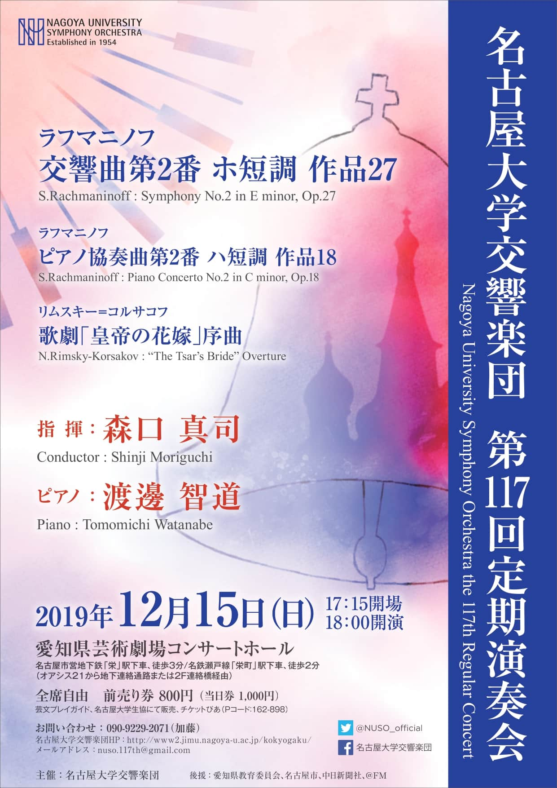
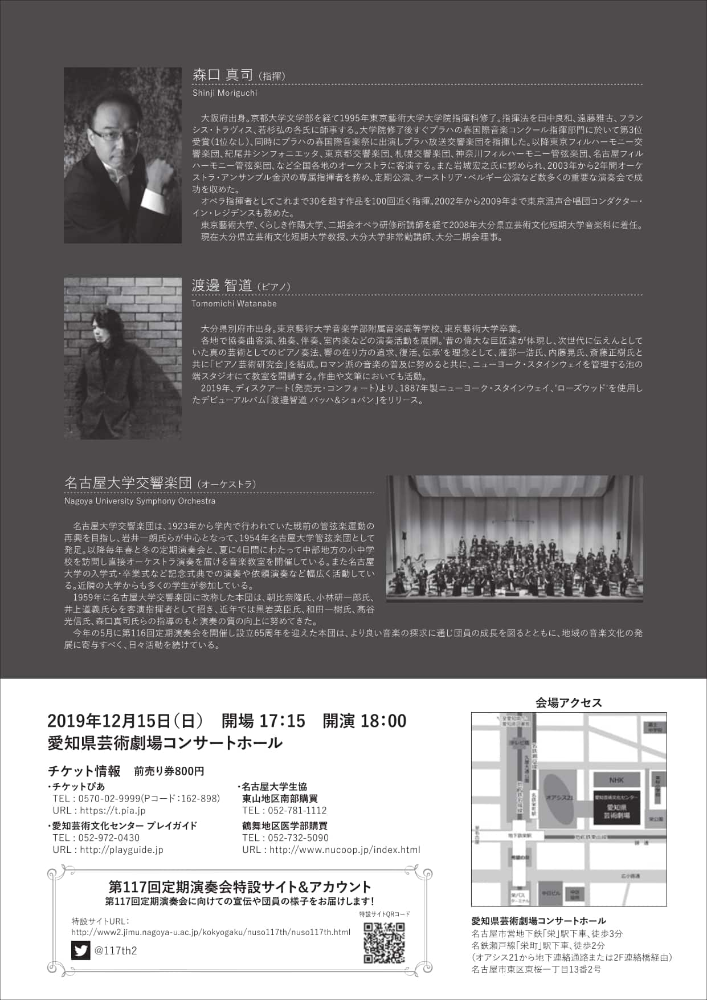

名古屋大学交響楽団
第117回定期演奏会
NUSO the 117th Regular Concert


公演情報
ラフマニノフ 交響曲第2番 ホ短調 作品27
ラフマニノフ ピアノ協奏曲第2番 ハ短調 作品18
リムスキー=コルサコフ 歌劇「皇帝の花嫁」序曲
会場,アクセス
会場：愛知県芸術劇場コンサートホール
アクセス：名古屋市営地下鉄「栄」駅より徒歩3分
名鉄瀬戸線「栄町」駅より徒歩2分
チケット情報
前売り券は
芸文プレイガイド,
チケットぴあ
(Pコード:162-898),名古屋大学生協にて販売